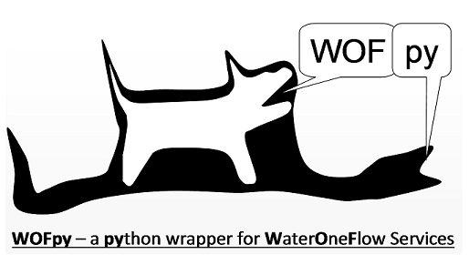
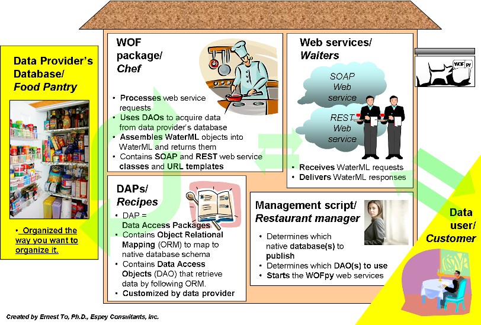

Welcome to WOFpy!¶
What is WOFpy?¶
WOFpy stands for Water One Flow in Python. It is designed to produce WaterML web services from a variety of back-end database formats, e.g. SQLite, Microsoft SQL server, PostgreSQL, etc. WOFPy is being maintained to expose ODM2 datastores as CUAHSI WaterOneFlow services as is a key part of the Python services stack for Critical Zone Observatories. It has been enhanced to be fully WaterOneFlow 1.1, and WaterML 1.1 compliant, and be registered with with CUAHSI HIS Central, and utilized CUAHSI Hydrodesktop.
Original Development was supported by the Texas Water Development Board as part of**’Water Data for Texas’** - a unified hydrological information system that shares environmental data for the state of Texas.
How do I get started?¶
The latest version of WOFpy is available for download via Github (https://github.com/ODM2/WOFpy). Once downloaded, you can follow the following steps to get WOFpy and its dependencies installed and to start and access the example web services that come pre-packaged with WOFpy.
What goes on inside WOFpy?¶
From a conceptual point of view, WOFpy can be compared to a restaurant that serves data. Data consumers are the restaurant customers. The data providers create the agricultural produce (i.e. raw data) and stock the pantry (i.e. provider’s database). However before the produce can be consumed they need to be first prepared into a palatable form (i.e. WaterML). This requires a restaurant (i.e. WOFpy) with a smart catering staff (i.e. WOFpy components) to select, cook and serve (i.e. extract, transform and load) the dishes.
The components within WOFpy are further explained in the following links:
How do I use WOFpy to publish my data?¶
Indices and tables¶
Developers¶